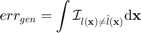
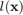
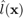
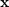
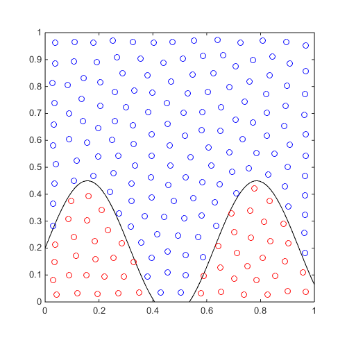
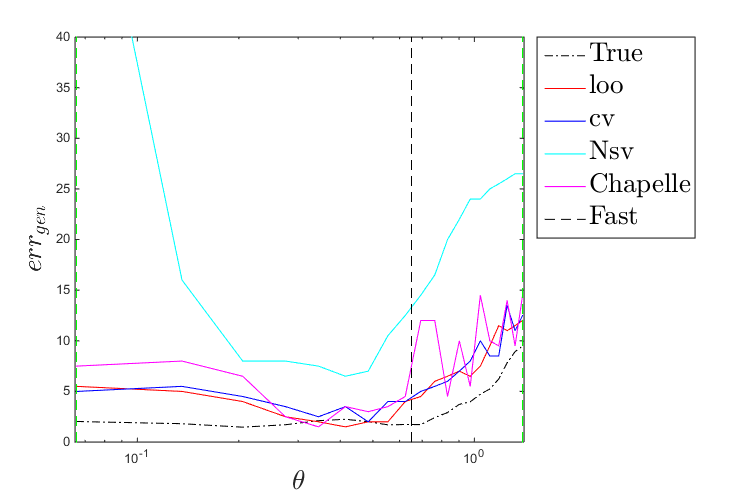
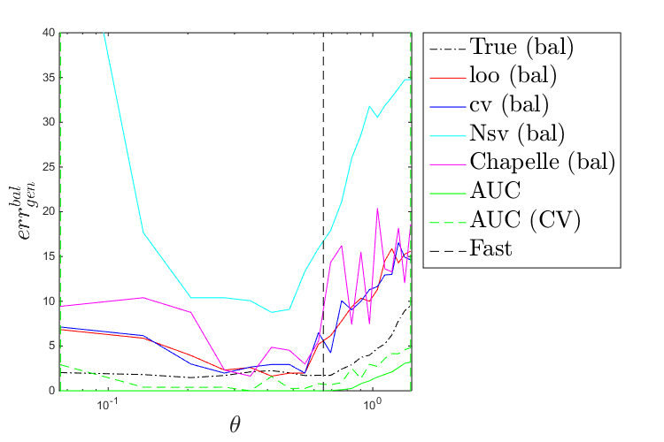
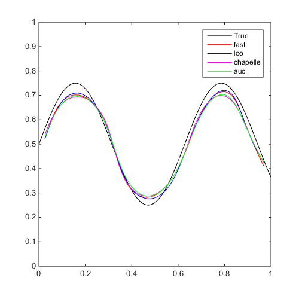
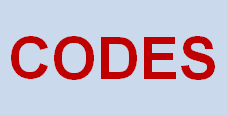

Examples / Meta-models / svm (parameters selection)
This file shows different parameter selection techniques and how they pertain to the choice of kernel parameters
Contents
Documentation
The documentation for the svm class can be found here.
Set rng
Set random number generator seed:
rng(0)
Concept
When training a meta-model, one typically tries to do so such that it minimizes some metrics. In classification problems, that metric is often the generalization error, i.e., the integral of the misclassification over the domain

where  is the true class and  is the estimated class of . One can show that a Leave One Out (LOO) procedure yields an almost unbiased estimator of the generalization error, Luntz and Brailovsky (1969). However, an LOO procedure may be numerically intractable. A Cross-Validation (CV), typically 10-fold, is usually faster and preferred as it is an estimator of the LOO error.
Specifically for Support Vector Machine, Vapnik (2000) drew a link between the number of support vectors and the generalization capability of the model. Later on, Chapelle et al. (2002) develeped an estimate of the LOO error based on the span of the support vectors.
In certain cases, such as highly unbalanced data, the generalization error is ill defined and the balanced generalization error makes more sense, Jiang and Missoum (2014). The Area Under the Curve (AUC), Metz (1978), is also widely used.
Finally, over the years, heuristics have been developed to quickly guess a suitable value for the kernel parameters. Such heuristics can be cross kernel or kernel specific. The heuristic referred to as 'stiffest' look for the most general case such that there is no misclassification error (Basudhar and Missoum, 2010). The heuristic referred to as 'fast', defined for the Gaussian kernel, defines the kernel parameter as the mean of the pairwise distances between +1 and -1 samples (Jaakkola et al., 1999).
Simple 2D problem
Consider a simple 2D classification problem:
f=@(x)x(:,2)-sin(10*x(:,1))/4-0.2; x=CODES.sampling.cvt(200,2); y=f(x); [X,Y]=meshgrid(linspace(0,1,100)); Z=reshape(f([X(:) Y(:)]),100,100); figure('Position',[200 200 500 500]) contour(X,Y,Z,[0 0],'k') hold on plot(x(y<=0,1),x(y<=0,2),'ro') plot(x(y>0,1),x(y>0,2),'bo') axis equal
For varying theta, train an SVM and compare the different aforementioned metrics:
svm=CODES.fit.svm(x,y); [theta_lb,theta_ub,theta_mean]=svm.point_dist; % Pairwise distances between +1 and -1 samples thetas=linspace(theta_lb,theta_ub,20)'; loo=zeros(length(thetas),2); cv=loo;Nsv=loo;chapelle=loo;auc=loo; true_misc=loo; % True misclassification X_t=[X(:) Y(:)]; Y_t=Z(:); parfor i=1:length(thetas) svm_tmp=CODES.fit.svm(x,y,'theta',thetas(i),'C',1e4); loo(i,:)=[svm_tmp.loo svm_tmp.loo('use_balanced',true)]; cv(i,:)=[svm_tmp.cv svm_tmp.cv('use_balanced',true)]; Nsv(i,:)=[svm_tmp.N_sv_ratio svm_tmp.N_sv_ratio(true)]; chapelle(i,:)=[svm_tmp.chapelle svm_tmp.chapelle(true)]; auc(i,:)=100-[svm_tmp.auc(svm_tmp.X,svm_tmp.Y) svm_tmp.cv('metric','AUC')]; true_misc(i,:)=[svm_tmp.me(X_t,Y_t) svm_tmp.me(X_t,Y_t)]; end
Plot a comparison of these metrics:
figure('Position',[200 200 750 500]) plot(thetas,true_misc(:,1),'k-.') hold on plot(thetas,loo(:,1),'r-') plot(thetas,cv(:,1),'b-') plot(thetas,Nsv(:,1),'c-') plot(thetas,chapelle(:,1),'m-') plot([theta_mean theta_mean],[0 max(max([loo;cv;Nsv;chapelle]))],'k--') plot([theta_lb theta_lb],[0 max(max([loo;cv;Nsv;chapelle]))],'g--') plot([theta_ub theta_ub],[0 max(max([loo;cv;Nsv;chapelle]))],'g--') leg=legend('True','loo','cv','Nsv','Chapelle','Fast','Location','bestoutside'); set(leg,'interpreter','latex','FontSize',20) set(gca,'xscale','log') axis([0.99*theta_lb 1.01*theta_ub 0 40]) xlabel('$\theta$','interpreter','latex','FontSize',20) ylabel('$err_{gen}$','interpreter','latex','FontSize',20) figure('Position',[200 200 750 500]) plot(thetas,true_misc(:,2),'k-.') hold on plot(thetas,loo(:,2),'r-') plot(thetas,cv(:,2),'b-') plot(thetas,Nsv(:,2),'c-') plot(thetas,chapelle(:,2),'m-') plot(thetas,auc(:,1),'g-') plot(thetas,auc(:,2),'g--') plot([theta_mean theta_mean],[0 max(max([loo;cv;Nsv;chapelle]))],'k--') plot([theta_lb theta_lb],[0 max(max([loo;cv;Nsv;chapelle]))],'g--') plot([theta_ub theta_ub],[0 max(max([loo;cv;Nsv;chapelle]))],'g--') leg=legend('True (bal)','loo (bal)','cv (bal)','Nsv (bal)','Chapelle (bal)','AUC','AUC (CV)','Fast','Location','bestoutside'); set(leg,'interpreter','latex','FontSize',20) set(gca,'xscale','log') axis([0.99*theta_lb 1.01*theta_ub 0 40]) xlabel('$\theta$','interpreter','latex','FontSize',20) ylabel('$err_{gen}^{bal}$','interpreter','latex','FontSize',20) 
Parameter selection strategy
Train different SVMs using different metrics and compare them:
f=@(x)x(:,2)-sin(10*x(:,1))/4-0.5; x=CODES.sampling.cvt(200,2); y=f(x); [X,Y]=meshgrid(linspace(0,1,100)); Z=reshape(f([X(:) Y(:)]),100,100); tic;svm=CODES.fit.svm(x,y);time_fast=toc; fast_err=svm.me([X(:) Y(:)],Z(:)); tic;svm1=CODES.fit.svm(x,y,'param_select','loo','UseParallel',true);time_loo=toc; loo_err=svm1.me([X(:) Y(:)],Z(:)); tic;svm2=CODES.fit.svm(x,y,'param_select','chapelle');time_chapelle=toc; chapelle_err=svm2.me([X(:) Y(:)],Z(:)); tic;svm3=CODES.fit.svm(x,y,'param_select','auc');time_auc=toc; auc_err=svm3.me([X(:) Y(:)],Z(:)); disp(['Using fast, theta=' num2str(svm.theta,'%5.3e') ', C=' num2str(svm.C,'%5.3e') ', err_gen=' num2str(fast_err,'%5.2f') '%, time=' CODES.common.time(time_fast)]) disp(['Using loo, theta=' num2str(svm1.theta,'%5.3e') ', C=' num2str(svm1.C,'%5.3e') ', err_gen=' num2str(loo_err,'%5.2f') '%, time=' CODES.common.time(time_loo)]) disp(['Using chapelle, theta=' num2str(svm2.theta,'%5.3e') ', C=' num2str(svm2.C,'%5.3e') ', err_gen=' num2str(chapelle_err,'%5.2f') '%, time=' CODES.common.time(time_chapelle)]) disp(['Using auc, theta=' num2str(svm3.theta,'%5.3e') ', C=' num2str(svm3.C,'%5.3e') ', err_gen=' num2str(auc_err,'%5.2f') '%, time=' CODES.common.time(time_auc)]) [X,Y]=meshgrid(linspace(0,1,100)); Z=reshape(f([X(:) Y(:)]),100,100); figure('Position',[200 200 500 500]) contour(X,Y,Z,[0 0],'k') hold on svm.isoplot('legend',false,'samples',false,'sv',false,'bcol','r') svm1.isoplot('legend',false,'samples',false,'sv',false,'bcol','b') svm2.isoplot('legend',false,'samples',false,'sv',false,'bcol','m') svm3.isoplot('legend',false,'samples',false,'sv',false,'bcol','g') legend('True','fast','loo','chapelle','auc')
Using fast, theta=6.501e-01, C=1.000e+04, err_gen=2.90%, time=5.9445e-02 s Using loo, theta=2.298e-01, C=1.000e+02, err_gen=2.56%, time=43s Using chapelle, theta=3.545e-01, C=1.000e+02, err_gen=2.98%, time=3s Using auc, theta=3.250e-01, C=1.000e+02, err_gen=3.05%, time=3s
References
- Luntz and Brailovsky (1969): Luntz A., Brailovsky V., (1969) On estimation of characters obtained in statistical procedure of recognition. Technicheskaya Kibernetica 3(6):6-12
- Metz (1978): Metz C. E., (1978) Basic principles of ROC analysis. Seminars in Nuclear Medicine. Technicheskaya Kibernetica 8(4):283-298 - DOI
- Jaakkola et al. (1999): Jaakkola T., Diekhans M., Haussler D., (1999) Using the Fisher kernel method to detect remote protein homologies. In: International Conference on Intelligent Systems for Molecular Biology. 149-158 - PMID
- Vapnik (2000): Vapnik V., (2000) The nature of statistical learning theory. Springer
- Chapelle et al. (2002): Chapelle O., Vapnik V., Bousquet O., Mukherjee S., (2002) Choosing multiple parameters for support vector machines. Machine Learning 46(1-3):131-159 - DOI
- Basudhar and Missoum (2010): Basudhar A., Missoum S., (2010) An improved adaptive sampling scheme for the construction of explicit boundaries. Structural and Multidisciplinary Optimization 42(4):517-529 - DOI
- Jiang and Missoum (2014): Jiang P., Missoum S., (2014) Optimal SVM parameter selection for non-separable and unbalanced datasets. Structural and Multidisciplinary Optimization 50(4):523-535 - DOI
Copyright © 2015 Computational Optimal Design of Engineering Systems (CODES) Laboratory. University of Arizona.
|  |
Computational Optimal Design of Engineering Systems |